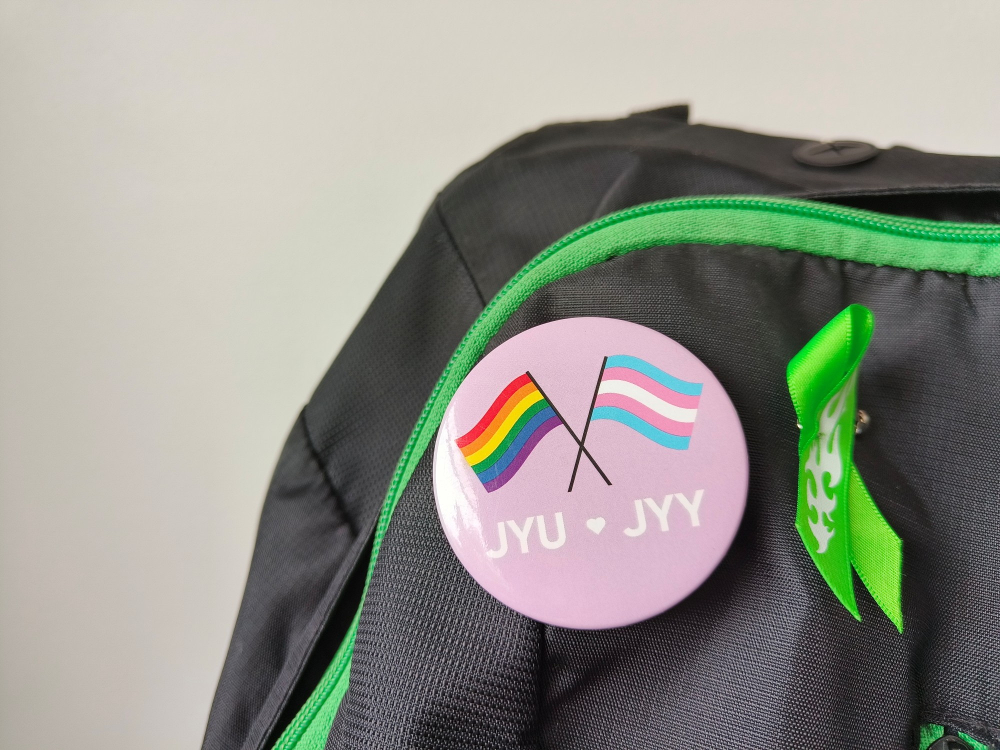
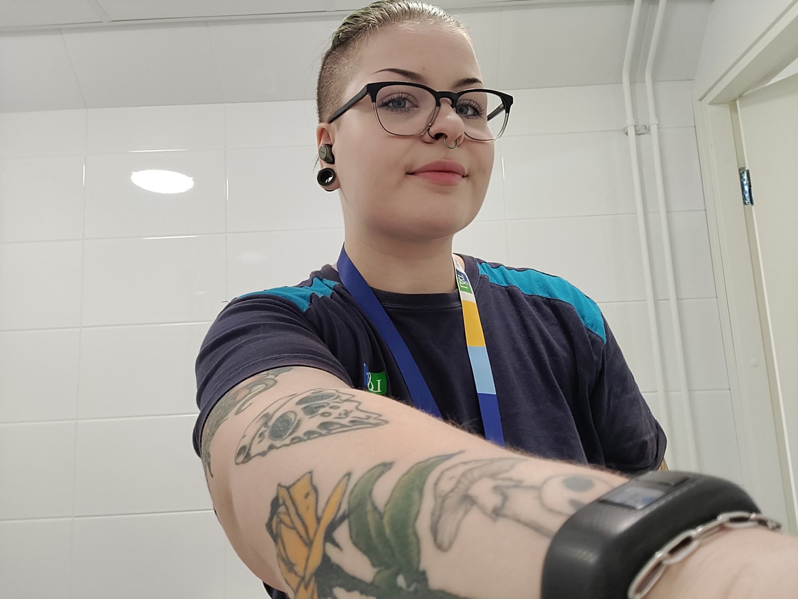

Tällä hetkellä opiskelen ensimmäistä vuotta Haaga-Heliassa tietojenkäsittelyn tradenomiksi verkossa, eli itsenäinen työskentely sujuu tiimityön lisäksi. Tätä ennen opiskelin työelämän digitaitojen verkko-opintokokonaisuuden (25 op). Kiinnostusta löytyy myös teollisuuteen ja opiskelinkin Jyväskylän ammattikorkeakoulussa energia- ja ympäristötekniikan alkeita. Sydäntäni lähellä olevia aiheita tällä hetkellä ovat saavutettavuus ja muotoilu.
Haluaisin kehittyä teknisesti lisää myös käytännössä – olisiko siulla kenties projekti tai työ vailla tekijää?
Haluun olla ylpeä tekemästäni työstä ja olen siksi huolellinen ja turvallisuuskeskeinen. Osaan myös kuunnella turhautuneita asiakkaita myötätunnolla ja ratkaisukeskeisesti. Olen opiskellut englannin opetusta Jyväskylän yliopistossa, joten miulta löytyy ihmislähtöinen ote työskentelyyn kielitaidon lisäksi.

Oon saanut paljon harjoitusta lasten ja nuorten parissa työskennellessä erilaisissa ohjaus- ja vastuutehtävissä kuten Taipalsaaren nuorisotilojen kesätuuraajana ja isosena seurakunnalla. Kerhoja, kuten kokki- ja leivontakerhoja, ohjasin kummallakin työnantajalla koulun ja siivoustyönkin ohella. Olin myös Taipalsaaren nuorisovaltuustossa sihteerinä sekä puheenjohtajana, sillä halusin saada nuorten äänen kuuluviin kunnan päätöksissä ja olla mukana erilaisissa tapahtumantuotantotehtävissä.

Kokemusta löytyy myös noin 9 vuoden ajalta erilaisista siivoustehtävistä. Työkohteet vaihtelivat ja enimmäkseen kohteina olivat kerrostalojen yleiset tilat, erilaiset toimistot ja kauppakeskukset sekä oppilaitoksen tilat. Siellä opin valikoivan katseen – näin pölyn pöydällä kiinnittämättä huomiota papereihin, joiden sisältö ei kuulunut minulle. Parasta siivoustehtävissä oli nähdä työnsä jälki ja parantaa asiakkaiden mukavuutta puhtailla tiloilla.
"Aurinkoisella asenteella pääsee pitkälle työstä riippumatta, oli vastassa sitten huonotuulinen teini tai hajonneet pyyherullatelineet ruuhka-aikaan ostarin WC:ssä."